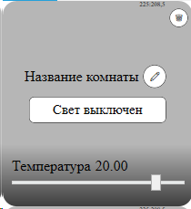

Лабораторная работа 5
Вступление
Данная лабораторная работа направлена на изучение компонентного подхода, стилей и анимаций в WPF. Эти концепции позволяют создавать более модульные, настраиваемые и визуально привлекательные пользовательские интерфейсы.
Задание 1: Создание компонента комнаты
Цель: Разработка компонента интерфейса для отображения и управления комнатой в системе "Умный дом".
Требования:
Создание компонента комнаты:
-
Разработать пользовательский элемент управления
RoomControl, который будет отображать информацию о комнате и позволять управлять её параметрами. ВRoomControlсоздать объект типаRoomс названиемCurrentRoom, который будет хранить информацию о комнате. Привязать данные изCurrentRoomк графическому интерфейсу с помощьюBindingиDataContext. -
Компонент должен содержать:
- Название комнаты
- Слайдер температуры
- Кнопка для переключения состояния света
- Кнопка для редактирования названия
- Кнопка для удаления компоненты
Элементы UI должны менять значения в объекте CurrentRoom с помощью привязки данных:
- К
Название комнатыдолжен быть привязано свойство названия комнаты изCurrentRoom. - К кнопке переключения света должно быть привязано свойство состояния света
IsLightOnизCurrentRoomс использованием конвертора значений. Значение должно конвертироваться в строку. - К фону компоненты должно быть привязано свойство состояния света
IsLightOnизCurrentRoomс использованием конвертора значений. Значение должно конвертироваться вLinearGradienBrush. - К слайдеру должно быть привязано значение
TemperatureизCurrentRoom. - На компоненте должен быть
TextBlock, в который привязана температура с использованием форматирования строки - округление до 2ух знаков (если вы используете для температурыfloatилиdouble).
Пример:

Задание 2: Стилизация компонентов
Требования:
- Создание простых стилей:
- Создать файл ресурсов
UserComponentStyles.xamlс определением стилей для компонентов приложения. - Определить стили для используемых в компоненте элементов управления (Button, TextBlock, и т.д.).
-
Ключи стилей (
x:Key) должны быть названы "осознано" - по названию должно быть понятно какому элементу относится стиль. -
Темы оформления:
- Реализовать две простые темы оформления: светлую и темную.
-
Каждая тема должна определять:
- Основные цвета (фон, текст)
- Стили для элементов управления
-
Применение стилей:
- Применить созданные стили к компонентам главного окна и компоненту комнаты.
- Реализовать кнопку для переключения между светлой и темной темой.
Задание 3: Анимации в пользовательском интерфейсе
Требования:
- Анимация через код:
- Реализовать анимацию удаления компоненты: уменьшение размера компоненты комнаты при удалении компоненты с использованием потока (
Task) и изменения свойств через код. - Реализовать анимацию анимацию добавления компоненты: анимация появления из прозрачности (свойство
Opacityменяется от 0 до 1) при добавлении комнаты.